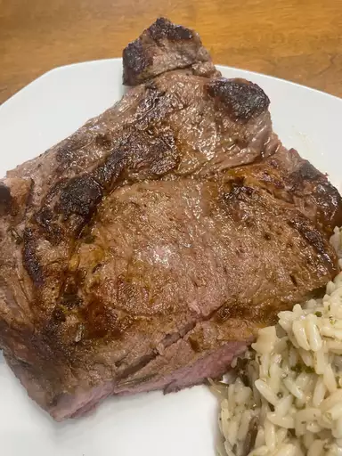

Flat Iron Steak

This delicious flat iron steak recipe was created from a combination of
different recipes that I read. I combined, adjusted, and finally perfected
the marinade and cooking time to my taste. I'm sure you will love it as well.
After all, it is perfection!
Ingredients
- 1 (2 pound) flat iron steak
- 2 ½ tablespoons olive oil
- 2 cloves garlic, minced
- 1 teaspoon chopped fresh parsley
- ¼ teaspoon chopped fresh rosemary
- ½ teaspoon chopped fresh chives
- ¼ cup Cabernet Sauvignon (or other dry red wine)
- ½ teaspoon salt
- ¾ teaspoon ground black pepper
- ¼ teaspoon black pepper
- ¼ teaspoon dry mustard powder
Steps
- Place steak inside a large resealable bag. Stir together olive oil, garlic, parsley, rosemary, chives, red wine, salt, pepper, and mustard powder in a small bowl.
- Pour marinade over steak in the bag. Press out as much air as you can and seal the bag. Marinate in the refrigerator for 2 to 3 hours.
- Heat a nonstick skillet over medium-high heat. Sear and cook the steak in the hot skillet for 3 to 4 minutes on each side for medium rare, or to your desired degree of doneness.
- Discard the marinade. Allow the steaks to rest for about 5 minutes before serving.
home